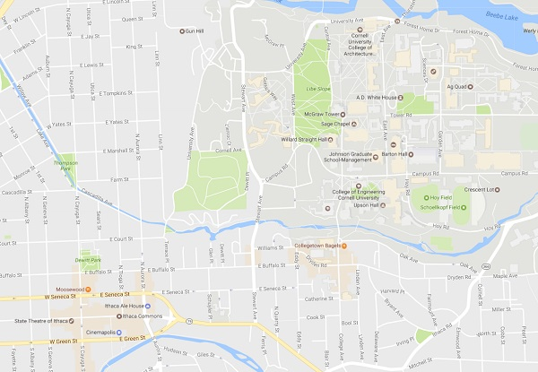

Transportation
How to get to Apple Fest
Getting to the Ithaca Commons from Cornell University
There are several ways of getting to fun that is Ithaca's Annual Apple Festival from the Cornell University campus. Whether you want to take a leisurely stroll through Collegetown, go to the Commons all in the comfort of your own vehicle, or want get to the Commons without having to worry about parking, there are several ways to make your way down to Apple Fest.
- Walking
- From central campus, one way of getting to the campus would be by walking down to College Town and then from there getting of Seneca St. by way of Eddy St. After that it's a straightforward walk down Seneca St. to the Commons. Another way, specifically from West Campus would be to head down Stewart Ave. and then walk down Seneca St. once they intersect.
- Driving
- Very similar to the walking route except instead of going through E Seneca St. by way of College Town, it's much easier to drive down College Ave. and turn right towards E State St., which will lead you directly into the Commons.

- TCAT
- For Cornell students, the TCAT is free on weekdays after 6pm and all day Saturday and Sunday, giving you the opportunity to head to Apple Fest at no cost at all. If you're on North Campus you would want to take the Route 30 during the weekdays and the Route 70 on the weekend to get to the Commons. From west campus, the Route 10 on the weekdays, and the Route 70 and 72 on the weekends will take you to the commons. For more information regarding TCAT routes and operating times click on the image.
Getting to the Ithaca Commons from Ithaca College
Coming from Ithaca College? We've got you covered too.
- Walking and Driving
-
Whether you're walking or driving the Ithaca Commons from Ithaca College, it's as simple as just going down S Aurora St. until you reach the Commons.
- TCAT
- The best way to get to the Ithaca Commons from Ithaca College is to board the Route 11, which goes both ways on a daily basis. For more information regarding TCAT bus routes and operating times you can visit their website here.
- Other
- Lastly, Ithaca offers many Taxi and other ridesharing services that will allow you to go wherever you please.